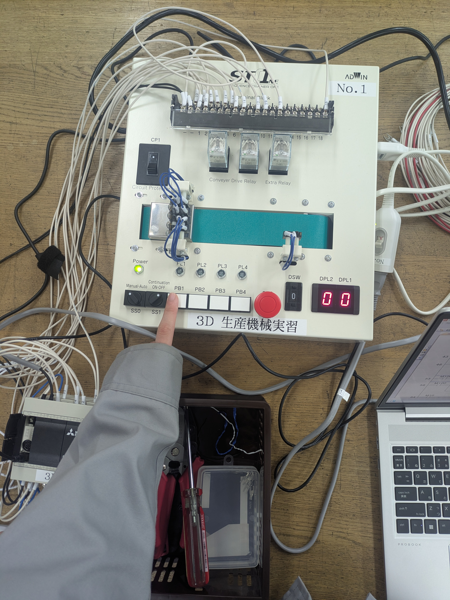

シーケンス制御・PLCとは

シーケンス制御やPLCについて学ぶ目的は、自動化システムの基礎的な制御技術を習得し、リレーやPLCによる回路設計・動作制御ができるようになることです。製品設計やメカトロニクス分野で必要とされる実践的な制御知識と技術を身につけることが狙いです。
6週にわたっての授業内容や学んだことなど
- 1週目：リレーシーケンスの実体配線図や回路図の書き方を学んだ
- 2週目：回路図を書いて実習キットに配線をして動作確認をした
- 3週目：PLCを用いてラダー図を書いて、動作確認をした
- 4週目：テキストの課題問題をペアと協力して進めた
- 5週目：テキストの確認問題をペアと協力して進めた
- 6週目：今まで習った内容を用いてエレベーターを作成した